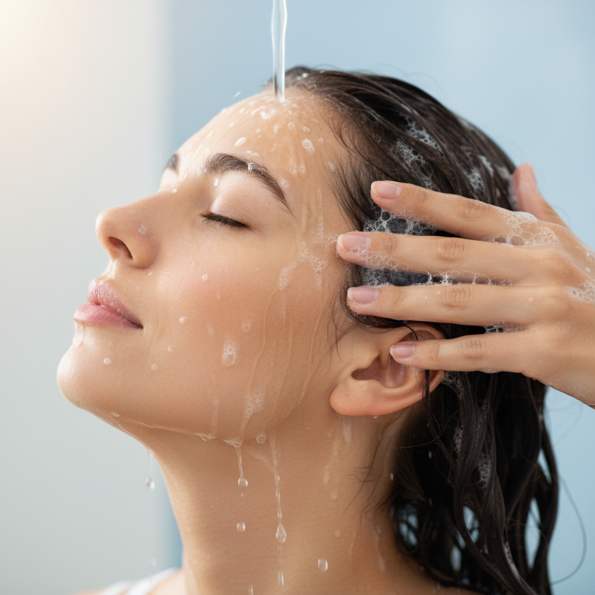
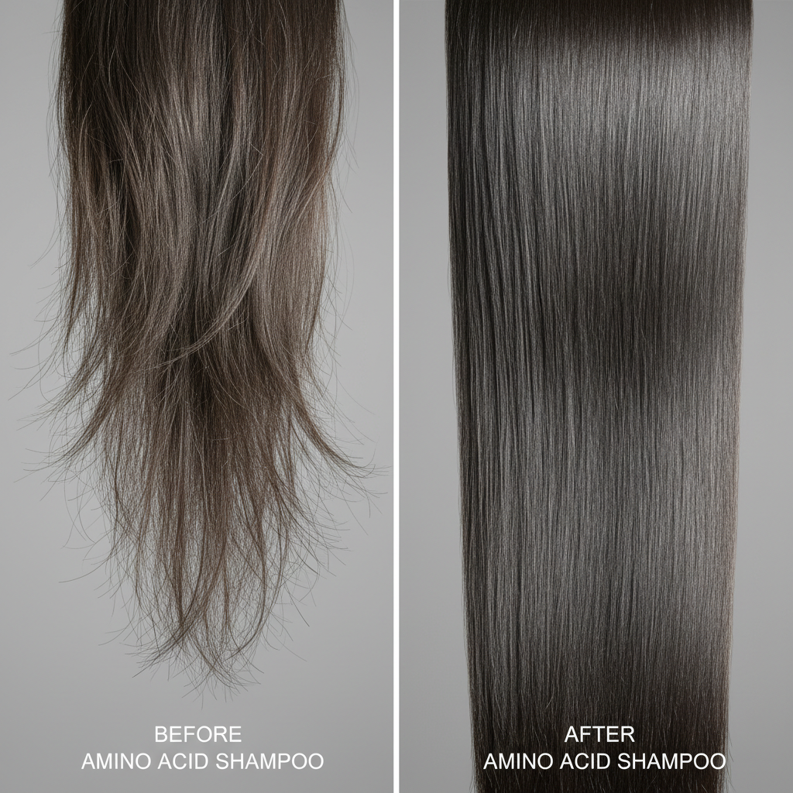

最近、髪のパサつきやゴワつき、広がりが気になりませんか？あるいは、カラーやパーマのダメージが蓄積して、髪が思うようにまとまらないと感じているかもしれません。敏感な頭皮の乾燥やかゆみに悩んでいて、どんなシャンプーを選べばいいのか迷っている方もいらっしゃるでしょう。
そんな髪と頭皮の悩みに向き合う上で、私がおすすめしたいのが「アミノ酸シャンプー」です。一見すると他のシャンプーと同じように見えますが、その成分と効果には大きな違いがあります。今回は、髪質改善専門の美容師である私が、アミノ酸シャンプーが髪と頭皮にもたらす本当の効果について、選び方や使い方まで詳しく解説していきます。
アミノ酸シャンプーとは？髪と頭皮に優しい理由
「アミノ酸シャンプー」と聞くと、漠然と「髪に良さそう」というイメージを持つ方が多いかもしれません。しかし、その「良さ」の根源は、私たちの髪の主成分にあることをご存知でしょうか。髪の毛の約80〜90%は、ケラチンというタンパク質でできており、このケラチンは18種類のアミノ酸が結合して構成されています。つまり、アミノ酸は髪そのものと言っても過言ではありません。
アミノ酸シャンプーとは、この髪の主成分であるアミノ酸と同じ構造を持つ「アミノ酸系洗浄成分」を配合したシャンプーのことです。一般的なシャンプーに多く使われる高級アルコール系洗浄成分（ラウレス硫酸Naなど）が、強い洗浄力で汚れと一緒に髪や頭皮に必要な油分まで奪ってしまうことがあるのに対し、アミノ酸系洗浄成分は非常にマイルドな洗浄力が特徴です。
例えば、「ココイルグルタミン酸Na」や「ラウロイルメチルアラニンNa」といった成分が代表的です。これらは、洗浄しながら髪や頭皮の潤いを保ち、刺激を最小限に抑える働きがあります。そのため、乾燥しやすい髪や敏感な頭皮の方でも安心して使えるのが大きなメリットです。
髪の表面を覆うキューティクルや、内部のコルテックスといった構造は、健康な状態であれば外部からの刺激を守り、内部の水分や栄養を保っています。しかし、強い洗浄力のシャンプーや摩擦によってこれらが傷つくと、髪はパサつき、ツヤを失ってしまうのです。アミノ酸シャンプーは、このデリケートな髪の構造を優しく守りながら洗い上げるため、ダメージの進行を抑え、健やかな髪へと導く土台を作ります。

髪質改善を叶えるアミノ酸シャンプーの具体的な効果
アミノ酸シャンプーがもたらす効果は、単に「優しい」だけではありません。髪質そのものを改善に導く、多角的なメリットがあります。
1. ダメージ補修と保湿効果
アミノ酸シャンプーの最大の魅力は、その優れたダメージ補修力と保湿効果にあります。アミノ酸系の洗浄成分は、髪の内部に浸透しやすく、傷んだ部分を優しく補修する働きが期待できます。キューティクルが剥がれてしまった部分にアミノ酸が吸着し、髪の潤いを閉じ込めることで、パサつきやゴワつきを抑え、しっとりまとまりやすい髪へと導きます。
特に、カラーやパーマ、紫外線などでダメージを受けた髪は、内部のアミノ酸が流出しやすくなっています。アミノ酸シャンプーは、失われたアミノ酸を補いながら洗うことで、髪の水分バランスを整え、しなやかさを取り戻す手助けをしてくれます。
さらに、ペリセアのような浸透性の高い補修成分が配合されているアミノ酸シャンプーであれば、その効果はより高まります。ペリセアは、わずか1分で髪の内部に浸透し、短時間でダメージを補修する力を持っています。シャンプーと同時に、髪の芯から補修ケアができるのは、まさに髪質改善を目指す上で理想的と言えるでしょう。 参考記事：ペリセア配合シャンプーは何が違う？美容師が補修力の仕組みを解説
2. 頭皮環境の改善と健康な髪の育成
髪の健康は、頭皮環境に大きく左右されます。アミノ酸シャンプーは、マイルドな洗浄力で頭皮への刺激が少ないため、乾燥によるかゆみやフケ、炎症といった頭皮トラブルの抑制に役立ちます。必要な皮脂まで洗い流すことがないため、頭皮のバリア機能を守り、健やかな状態を保ちやすいのです。
健康な頭皮は、健康な髪が育つための土台となります。頭皮環境が整うことで、髪一本一本が根元からハリとコシを持ち、抜け毛の予防にも繋がる可能性があります。敏感肌の方や、頭皮のトラブルに悩む方にとって、アミノ酸シャンプーはまさに救世主となるでしょう。
3. カラーやパーマの持ちを良くする
ヘアカラーやパーマは、髪に少なからず負担をかけます。特にカラー後の髪は、キューティクルが開いた状態になりやすく、色素が流出しやすいデリケートな状態です。アミノ酸シャンプーの穏やかな洗浄力は、このキューティクルを過度に刺激せず、色素の流出を抑える効果が期待できます。結果として、カラーの色持ちが良くなり、美しい髪色を長く楽しむことができます。
同様に、パーマ後の髪も、アミノ酸シャンプーで優しく洗い上げることで、カールの形状をキープしやすくなります。強い洗浄力のシャンプーは、パーマの持ちを悪くする原因にもなりかねません。 参考記事：縮毛矯正後のシャンプー、何を使えばいい？ 美容師が選び方5つを解説
4. 自然なツヤとハリコシを与える
髪の内部が潤い、キューティクルが整うことで、光が均一に反射しやすくなり、内側から輝くような自然なツヤが生まれます。また、髪の主成分であるアミノ酸を補給することで、一本一本の髪にハリとコシが戻り、根元からふんわりとしたボリューム感を感じられるようになります。細毛や軟毛で髪がペタンとしやすい方にも、アミノ酸シャンプーはおすすめです。

失敗しないアミノ酸シャンプーの選び方
アミノ酸シャンプーと一口に言っても、様々な製品があります。その中から、あなたの髪に本当に合ったものを見つけるためには、いくつかのポイントを押さえておくことが大切です。
1. 洗浄成分の種類を確認する
最も重要なのは、シャンプーの成分表示を確認することです。成分表示は配合量の多い順に記載されているため、上位に「ココイルグルタミン酸Na」「ラウロイルメチルアラニンNa」「ココイルメチルタウリンNa」などのアミノ酸系洗浄成分が記載されているものを選びましょう。
一方で、「ラウレス硫酸Na」「ラウリル硫酸Na」といった成分が上位に記載されている場合は、アミノ酸系と謳っていても洗浄力が強い可能性があるため注意が必要です。 参考記事：シャンプーの成分表、読めますか？ 美容師が教える洗浄成分の見分け方
2. 髪の悩みに合わせた補修成分に注目
アミノ酸系洗浄成分は髪と頭皮に優しいですが、さらに髪質改善を目指すなら、プラスアルファの補修成分にも注目してください。
- ペリセア（ジラウロイルグルタミン酸リシンNa）: 短時間で髪の内部に浸透し、ダメージを強力に補修する働きがあります。即効性が高く、シャンプー後の手触りの違いをすぐに実感しやすいでしょう。
- エルカラクトン（γ-ドコサラクトン）: 熱に反応して髪と結合し、ダメージを補修する成分です。ドライヤーやヘアアイロンの熱を味方につけ、使うたびに髪のまとまりやツヤが向上します。
- 加水分解ケラチン、加水分解コラーゲン: 髪の主成分であるタンパク質を補い、ハリコシや潤いを与えます。
これらの成分が配合されているかを確認することで、よりあなたの髪悩みに特化したケアが可能になります。
3. 香りや使用感も考慮する
毎日使うシャンプーだからこそ、香りや泡立ち、洗い上がりの感触も大切なポイントです。心地よい香りはバスタイムをリラックスできる時間に変えてくれますし、泡立ちの良さは摩擦を減らし、髪への負担を軽減します。実際にテスターなどで試せる機会があれば、ぜひ使用感もチェックしてみてください。
アミノ酸シャンプーの効果を最大限に引き出す使い方
どんなに良いシャンプーを選んでも、使い方が間違っていては効果を十分に引き出すことはできません。アミノ酸シャンプーの効果を最大限に実感するための、正しい使い方をご紹介します。
1. 丁寧な予洗い
シャンプーをする前に、まずは38度くらいのぬるま湯で髪と頭皮をしっかりと洗い流しましょう。予洗いだけで髪の汚れの約7〜8割が落ちると言われています。これによりシャンプーの泡立ちが良くなり、髪への摩擦を減らすことができます。
2. しっかり泡立ててから髪に乗せる
シャンプー剤を直接髪に乗せるのではなく、手のひらで軽く泡立ててから髪全体に広げましょう。泡立てネットを使うのもおすすめです。泡がクッションとなり、髪同士の摩擦を防ぎながら優しく洗い上げることができます。
3. 頭皮を優しく洗う
指の腹を使って、頭皮をマッサージするように優しく洗います。爪を立てたり、ゴシゴシと強くこすったりするのは厳禁です。頭皮の血行を促進するようなイメージで、ゆっくりと指を動かしましょう。髪の毛自体は、泡で包み込むようにするだけで十分です。

4. すすぎは念入りに
シャンプー後のすすぎは、時間をかけて丁寧に行ってください。シャンプー成分が頭皮に残ってしまうと、かゆみやフケ、炎症などの頭皮トラブルの原因になることがあります。特に髪の生え際や耳の後ろ、襟足などは洗い残しが多い部分なので、意識してしっかりと洗い流しましょう。
5. トリートメントやヘアオイルとの併用
アミノ酸シャンプーで髪を優しく洗い整えた後は、トリートメントやヘアオイルで栄養を補給し、潤いを閉じ込めることが大切です。特に、エルカラクトンが配合されたトリートメントは、ドライヤーの熱を利用して髪の内部を補修し、まとまりとツヤを向上させてくれます。
また、アウトバストリートメントとしてペリセアやエルカラクトンが配合されたヘアオイルを使うことで、日中の乾燥やダメージから髪を守り、さらに効果を高めることができます。 参考記事：ヘアオイルの使い方、間違ってない？ つけすぎを防ぐ5つのコツ 参考記事：美容室のトリートメント、なぜ1週間で元どおり？5つの原因と自宅ケア
髪質改善への第一歩。アミノ酸シャンプーで理想の髪へ
アミノ酸シャンプーは、単に髪を洗うだけでなく、髪本来の美しさを引き出し、健やかな頭皮環境を育むための大切なステップです。日々のヘアケアを見直すことで、諦めていた髪の悩みもきっと解決に向かいます。
髪質改善は一日にして成らず、毎日の積み重ねが重要です。今回ご紹介したアミノ酸シャンプーの選び方や使い方を参考に、ぜひ今日からあなたのヘアケアに取り入れてみてください。触れるたびに嬉しくなるような、しっとりまとまるツヤ髪へと、きっと変化を感じられるはずです。